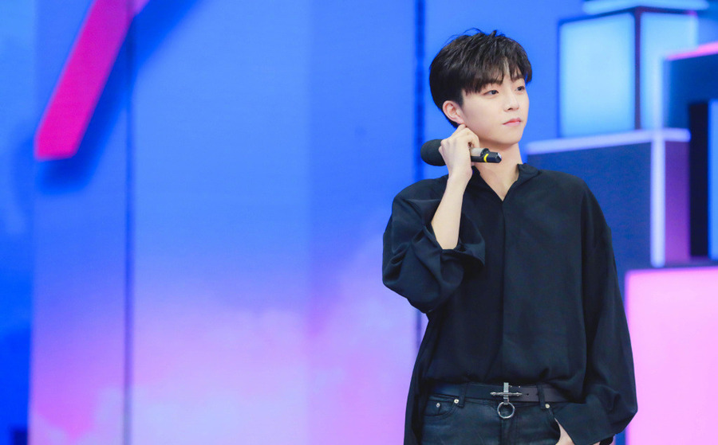

Baekhyun was born on May 6, 1992 in Bucheon, Gyeonggi Province, South Korea. Baekhyun began training to be a singer when he was 11 years old, influenced by South Korean singer Rain. He attended Jungwon High School in Bucheon, where he was the lead singer in a band called Honsusangtae (lit. "coma") and won a local music festival. He received piano lessons from Kim Hyun-woo, member of South Korean rock band DickPunks. In addition to musical activities, Baekhyun trained as a martial artist in his youth and has a dan 3 black belt in Hapkido. Baekhyun was spotted by an SM Entertainment agent while he was studying for the entrance exams to the Seoul Institute of the Arts. He later joined SM Entertainment in 2011 through the S.M. Casting System.
Recommendation: Byun Baek-hyun (born May 6, 1992), better known mononymously as Baekhyun, is a South Korean singer, songwriter, and actor. He is a member of the South Korean-Chinese boy group EXO, its sub-group EXO-K, its sub-unit EXO-CBX, and South Korean supergroup SuperM. He debuted as a soloist in July 2019 with the release of his debut EP, City Lights.
Junkai was born in Chongqing, China. Junkai grew up mostly under his grandparents' care due to his parents' busy work schedules. His father works as a taxi driver while his mother works as a hairdresser. In late 2010, he became one of the trainees under the TF Entertainment, and becoming the only trainee later then. Prior to his debut, Junkai participated in TF Family's mini album I Don't Want to Change. He has released several cover songs online, and participated in audition programs. In particular, his cover of "Onion" (originally by Aska Yang) received attention and was covered by several news outlets. He officially debuted as a member of TFBoys on 6 August 2013, at the age of 13 alongside Roy Wang and Jackson Yee. In 2017, he was enrolled into the Beijing Film Academy after having passed the college entrance examination; which received much media fanfare.
Recommendation:Wang Junkai born 21 September 1999, also known as Karry Wang, is a Chinese singer and actor. He was a trainee of TF Family since 2010 and debuted as the leader of TFBoys in 2013. He is one of China's wealthiest people born after 1990, with a personal net worth of 248 million yuan (US$36 million) as of December 2016.

Chen was born in Kaohsiung, Taiwan where he was scouted by A Legend Star Corp and trained for a period of 8 months before travelling to mainland China.
Recommendation:Chen Linong born October 3, 2000 is a Taiwanese singer and actor active in China. He took part in the Chinese show Idol producer and debuted under Nine Percent as a vocalist. He released his first song 'Decoding Game' on June 20, 2018.
